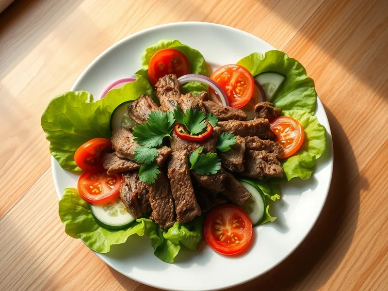

Фото: Иллюстрация ИИ, Cloudflare Workers AI
Тёплый салат с говядиной по-тайски
Обжаренная говядина с огурцом, помидорами, кинзой и кисло-острой заправкой
25 мин2 порц.413 ккал на порциюБ 32 · Ж 26 · У 12Азиатская кухня
Продукты на 2 порц.
- Говядина300 г
- Огурцы1 шт
- Помидоры1 шт
- Лук репчатый0,5 шт
- Кинза0,5 пучка
- Перец чили1 шт
- Лимон0,5 шт
- Соевый соус2 ст. л.
- Сахар1 ч. л.
- Растительное масло1 ст. л.
- Салат листовой60 г
Как готовить
- Нарежьте говядину поперёк волокон тонкими полосками толщиной 5 мм.
- Смешайте соевый соус, сок лимона, сахар и мелко нарезанный чили. Это заправка.
- Нарежьте огурец полукружьями, помидор дольками, лук тонкими перьями, кинзу крупно. Выложите листья салата на блюдо.
- Разогрейте масло на сильном огне и обжарьте говядину 3-4 минуты, помешивая, до румяной корочки снаружи.
- Горячее мясо сразу полейте половиной заправки, смешайте с овощами и кинзой, полейте остатками заправки и подавайте.
Совет. Для этого салата берите мягкую вырезку или толстый край: жёсткие куски за 4 минуты не успеют стать мягкими. Мясо удобнее нарезать, если подморозить его 15 минут.